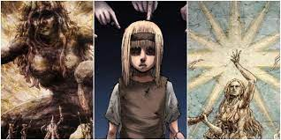
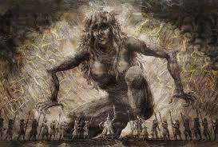
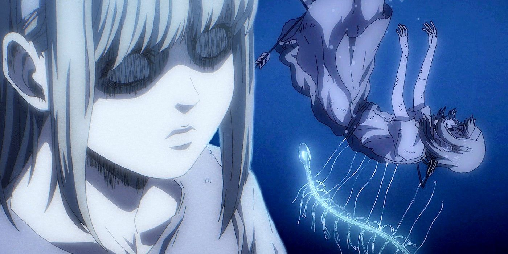
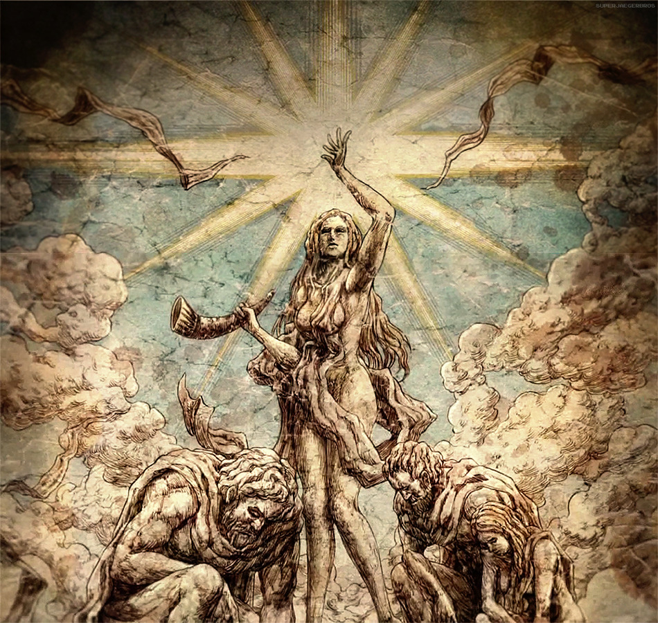
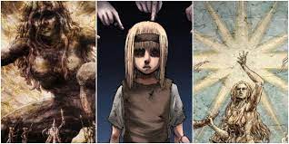
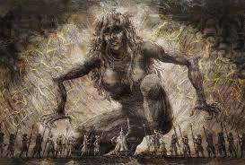
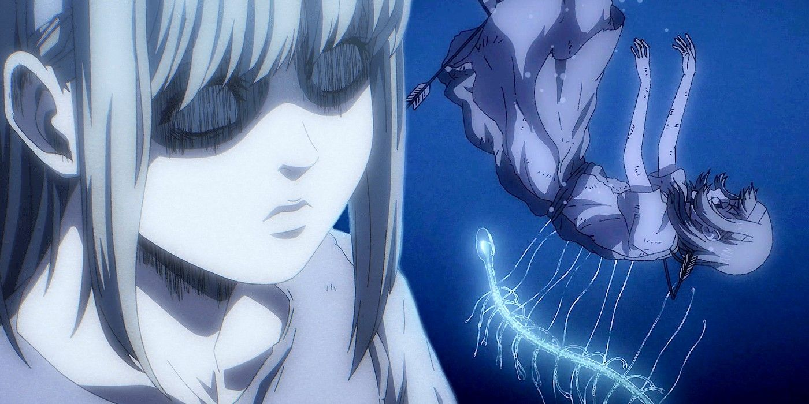
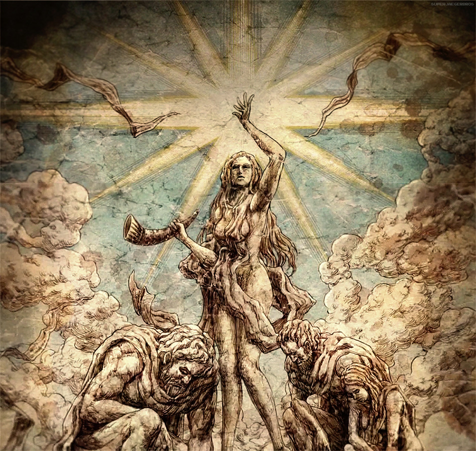

Ymir was the first person to obtain the power of the Titans.
She was a slave of the Eldian king, who abused her power to bring prosperity to Eldia while devastating Marley and the rest of the world.
Thirteen years after awakening her power, she died protecting the king; her corpse was then forcibly cannibalized by their daughters, Maria,
Rose, and Sheena. Her powers then split into what eventually became known as the Nine Titans.
Upon her death, Ymir was transported to the Coordinate, where she molded Titans out of the sands and obeyed the royal family whenever they sought the Founder's power.
More Bout The Founder:
The Founding Titan (始祖の巨人 Shiso no Kyojin?, also translated as Progenitor Titan) was one of the Nine Titans and the first of all Titans. Its Scream (叫び Sakebi?) could create and control other Titans and modify the memories and body compositions of the Subjects of Ymir,
but this power had historically only been able to be used by members of the royal family.
According to Marley's Titan Biology Research Society,
the Founding Titan was the point where the paths connecting all Subjects of Ymir and Titans cross.[3] Because of this, those who hail from Marley sometimes called it the "Coordinate" (座標 Zahyō?).
Eren's Founding Titan form is known as Doomsday Titan
Titan control:
By screaming, the Founding Titan granted its user the ability to control Titans at
will and make them follow virtually any order without question. This was demonstrated by Eren Yeager,
who unintentionally commanded nearby Pure Titans to eat Dina Fritz's Titan and attack the Armored Titan.
It appeared to be only effective on Pure Titans, although those with the power of the Titans can still feel
its influence.[10] It was also used by Karl Fritz to build the Walls, who commanded many Colossus Titans to
harden their bodies and confine themselves within the resulting structures. In ancient times, Eldia used to use
this ability to command an army of Titans for war; however, once set loose, these Titans became indiscriminate
weapons of mass destruction that would slaughter Eldia's enemies.[11] This ability had no known range, although
Karl Fritz used it to command Colossus Titans that span across a large portion of Paradis Island. Rod Reiss claimed
the power has the capacity to wipe out all the Titans, if used to its full potential.
Memory manipulation:
The Founding Titan was able to modify the minds and memories of the Subjects of Ymir,
even entire populations at once. This ability was related to the Titan control ability:
As noted by Erwin Smith, Titans are simply transformed humans (specifically, the Subjects of Ymir);
therefore, the screams that control the minds of the former should be able to affect the latter as well.
It was used by Karl Fritz to make the Subjects of Ymir inside the Walls forget the history of the world before the Walls' installation.
It was also used by Frieda Reiss to remove Historia's memories of her visits.[16] These memories, however,
appeared to be accessible in dreams, as Historia would sometimes be able to dream about her encounters with Frieda,
although she would forget about them once she awoke.[17] Members of the Ackerman bloodline were resistant to this ability
while anyone who was not a Subject of Ymir was unaffected by it.
History;
Around 2,000 years ago, Ymir Fritz's village was attacked and enslaved by the Eldians,
who then cut out their tongues. One day after a pig was released, the tribe's ruler, Fritz,
called all of the slaves and asked for the culprit. The slaves all began to point at Ymir, who
was then "freed" only to be hunted by dogs and men.
Wounded and desperate, Ymir took shelter in a nearby tree, but as soon as she stepped in, she
slipped and fell into an underground body of water. There, she came into contact with a mysterious
spine-like creature which attached to her back and triggered the first Titan transformation.
With her newfound power, Ymir returned to serve Fritz and used her Titan to cultivate land, build bridges,
and amass wealth for the Eldians. Under his command, she also destroyed the forces of Eldia's rival, Marley.
To "reward" Ymir for her service, Fritz took her as his concubine giving her his name and, together the two
had three children: Maria, Rose, and Sheena.
After serving the king for 13 years, Ymir died while thwarting an assassination attempt on his life. After her
death, Ymir found herself inside a mysterious land, meanwhile the king forced his daughters to eat Ymir's corpse
in an attempt to preserve the power of the Titans. He commanded the daughters to continue to reproduce and cannibalize each
other so that Ymir's blood does not run out and Eldia could rule forever with its Titans. Ymir's powers became the Nine Titans and she continued to
serve her descendants, building them Titans whenever they invoked the power of the Titans.[44]
After these seventeen centuries, the Founding Titan was inherited by Karl Fritz, the 145th King. King Fritz chose
to abandon the conflicts of Eldia and relocated the capital of Eldia to Paradis Island where he used the Founding
Titan to create many Colossus Titans in the building of three Walls: Maria, Rose, and Sheena. In the absence of the
Founding Titan, the Great Titan War continued. Over the course of the war, Eldia lost all its territory on the continental
mainland to Marley and its people fled overseas to Paradis Island where they entered into the Walls. Some time after
the people were gathered within the Walls, King Fritz used the Founding Titan to erase the memories of the outside world
from most of the population's minds, leading them to believe they were the last remnants of humanity in a world overrun
by the Titans.
Upon the closing of the gates of Wall Maria, King Fritz announced to his relatives who chose to remain across sea that a pact had been made with the Founding Titan. In order to secure peace for Eldia while simultaneously arranging for
the nation's eventual destruction, King Fritz ensured that all successors after him would be overcome by his will if they chose to use the Founding
Titan for Eldia's sake.[48][49] Some time afterward, the King passed his power over to his descendants in the royal family, now known as the Reiss family.
For generations, the Reiss family passed the Founding Titan down from successor to successor. Eventually, the Founding Titan was inherited by Uri Reiss
from his father.[51] Early in his life with the Founder, Uri protected himself from Kenny Ackerman using his Titan, and he would later become a close friend
of his would-be assassin.
Sometime later, in the year 842, Uri Reiss passed on the Founding Titan to his niece Frieda Reiss, daughter of his older brother Rod Reiss.[39] Frieda presumably made
little use of the Founding Titan for the next three years, though on occasion she visited her half-sister Historia Reiss and used the Founding Titan to erase her memories of each visit
 






